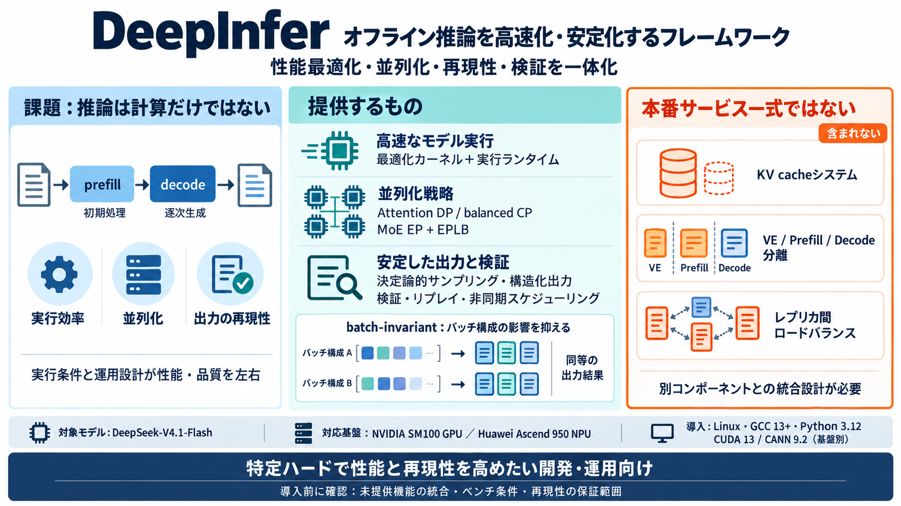

vLLM vs Ollama vs SGLang vs TensorRT-LLM Serving 2026 Search
SGLang beats vLLM by 29% on throughput when your requests share context (chatbots, RAG, agents). Its core trick (RadixAt…

DeepSeekの大規模推論サービスを支える「高性能推論フレームワーク」を、運用目線で要点化します。
LLM推論では、計算（prefill / decode）だけでなくGPU/NPU上のスケジューリング、並列化、KV cache管理、再現性が性能と品質を左右します。
DeepInferは、モデル実行の高速化に加え、スケール時の安定性・再現性（決定論的サンプリング）・検証・非同期スケジューリングを一体で設計します。
オフライン推論（offline inference）向けに提供されますが、本番相当の“推論サービス一式”に必要な要素の一部は含まれないと明記されています。
対応モデルとして「DeepSeek-V4.1-Flash」が明示されています。機能は最適化カーネルと実行（サンプラー含む）として提供されます。
並列化戦略として、Attention DP / balanced CP、MoE EP + EPLB などが挙げられ、効率と品質のトレードオフを制御します。
決定論的サンプリングや構造化出力により、同じ条件で出力品質・形式の安定を狙います。加えて検証とリプレイも含まれます。
バッチに依存しない推論（batch-invariant inference）が言及されており、運用上の条件差による挙動変化を減らす狙いが読み取れます。
対応ハードウェアは NVIDIA SM100 GPUs と Huawei Ascend 950 NPUs。汎用フレームワークというより、特定基盤で性能を最大化する前提です。
Linux、GCC 13以上、Python 3.12、CUDA 13（NVIDIAのみ）、CANN 9.2（Ascendのみ）が前提です。ビルド方法とオフライン実行例が提供されます。
KV cacheシステムや VE/Prefill/Decode分離、レプリカ間ロードバランシングは not included。別コンポーネントの統合設計が必要で、そこを見落とすと導入計画が崩れます。
DeepInferは、特定ハードで性能と再現性を高めたい開発者／運用担当に適します。一方で、本番サービスとしての“欠落要素”と再現性の保証範囲は要検証です。
SGLang beats vLLM by 29% on throughput when your requests share context (chatbots, RAG, agents). Its core trick (RadixAt…
1. DeepSeek-Infer Demo: We provide a simple and lightweight demo for FP8 and BF16 inference. 2. SGLang: Fully support th…
TensorRT-LLM’s performance is already shown in the benchmark above, which was made by the team that developed SGLang, su…
C++ 366 MIT 37 3 13 Updated Sep 30, 2026 TileKernels Public A kernel library written in tilelang deepse…
跳至導覽 跳過主要內容 跳至右欄 [...] 今年稍早，DeepSeek 的開創性 R1 模型以其成熟度震驚矽谷，該公司目前正致力於開發新產品，以鞏固其在中國 AI 領域的領先地位。 更多鉅亨報導 •全球AI百強榜發布！ChatG…